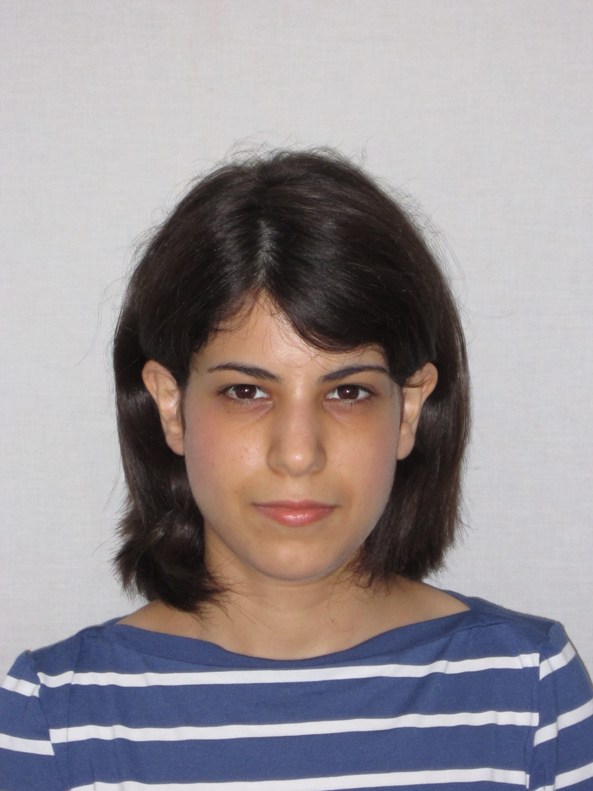

Michal Yemini

Assistant Professor About MeI am an assitant professor in the Faculty of Engineering at Bar-Ilan University, Israel. Prior to that I was an associate research scholar in the Department of Electrical and Computer Engineering at Princeton University, a postdoctoral researcher at the WSL at Stanford University and a visiting postdoctoral researcher at Princeton University. I received the PhD in electrical engineering in the joint MSc-PhD track from Bar Ilan University, Israel in 2017, and the BSc in computer engineering from the Technion - Israel Institute of Technology in 2011. I'm looking for MSc and PhD students with strong analytical background and work ethics. Research InteresetsMy research interests include:
|